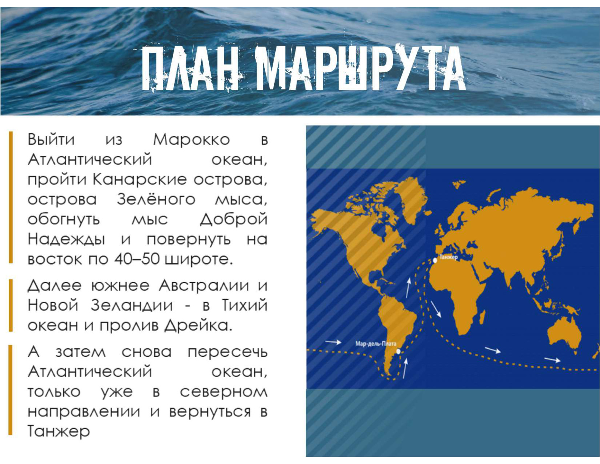
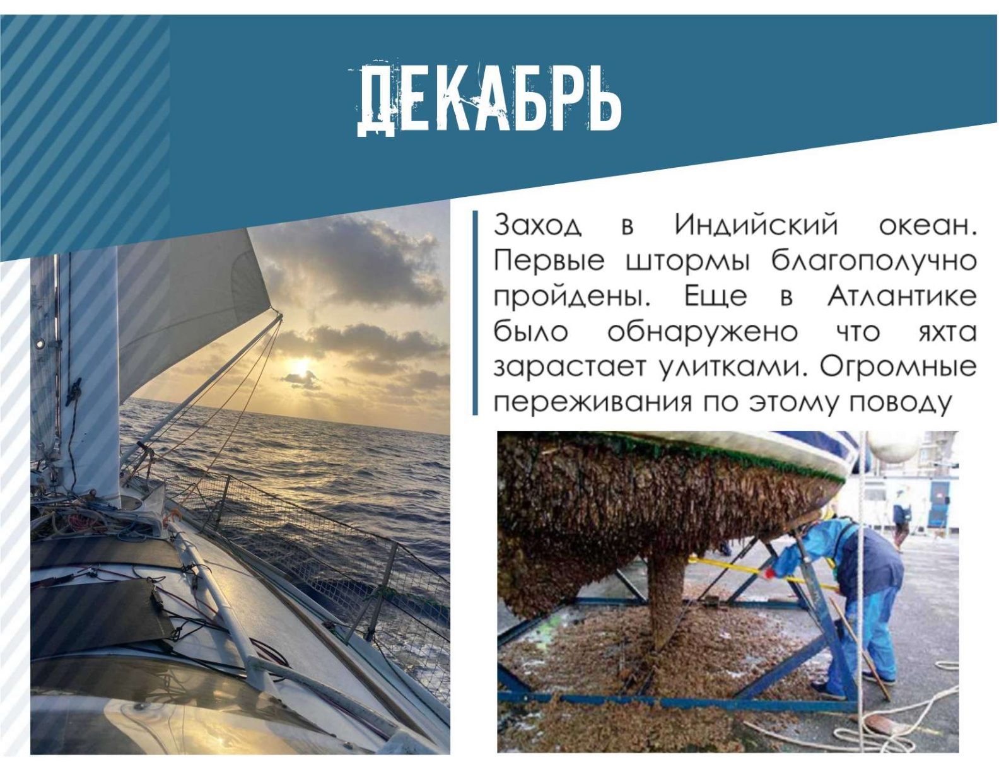
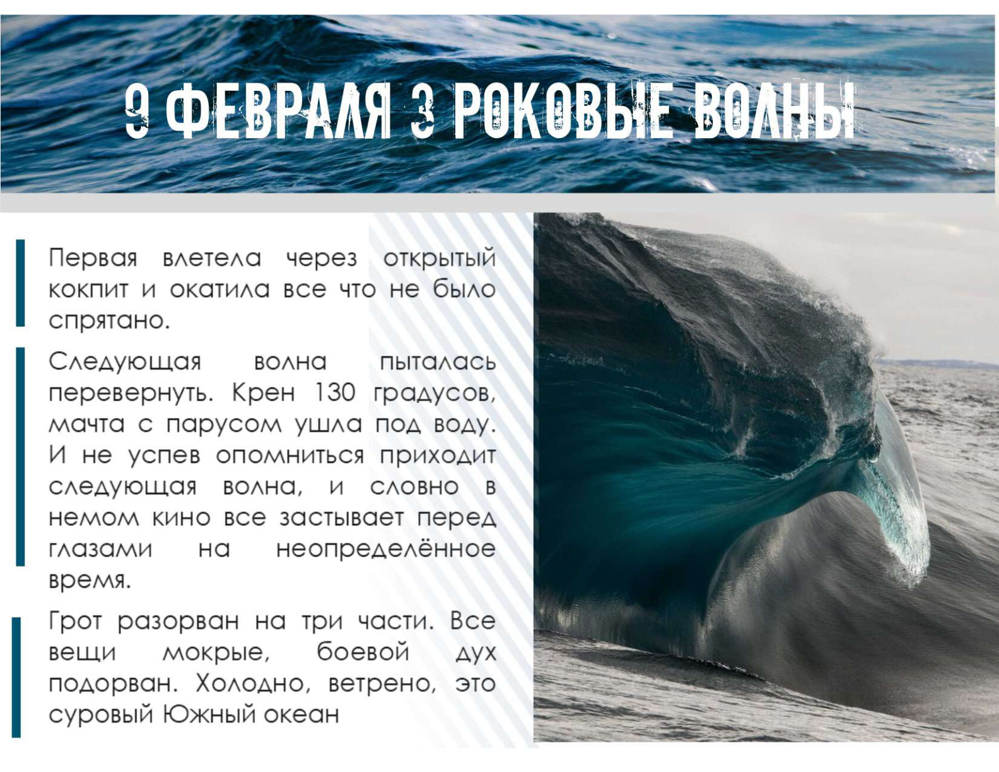
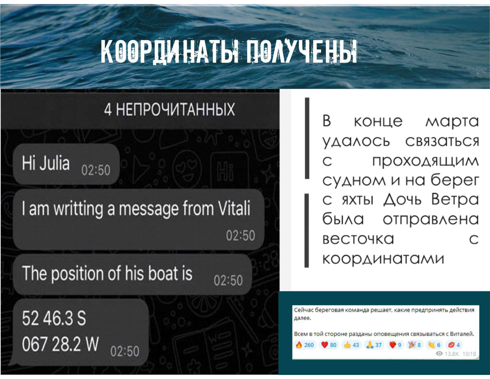
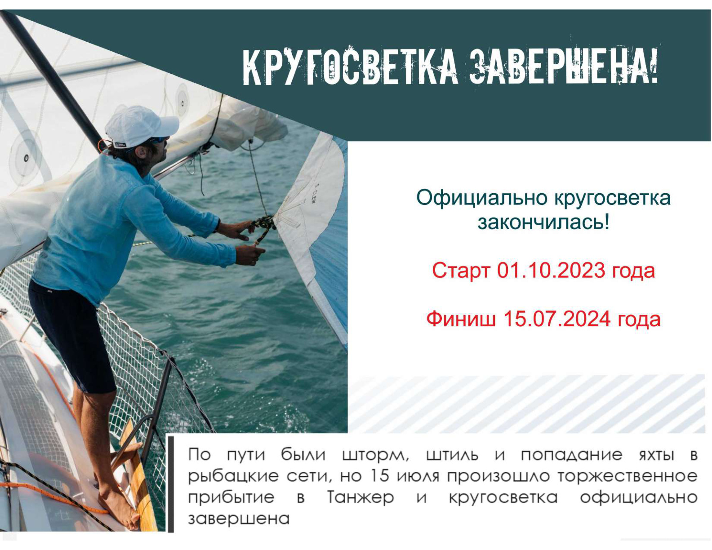
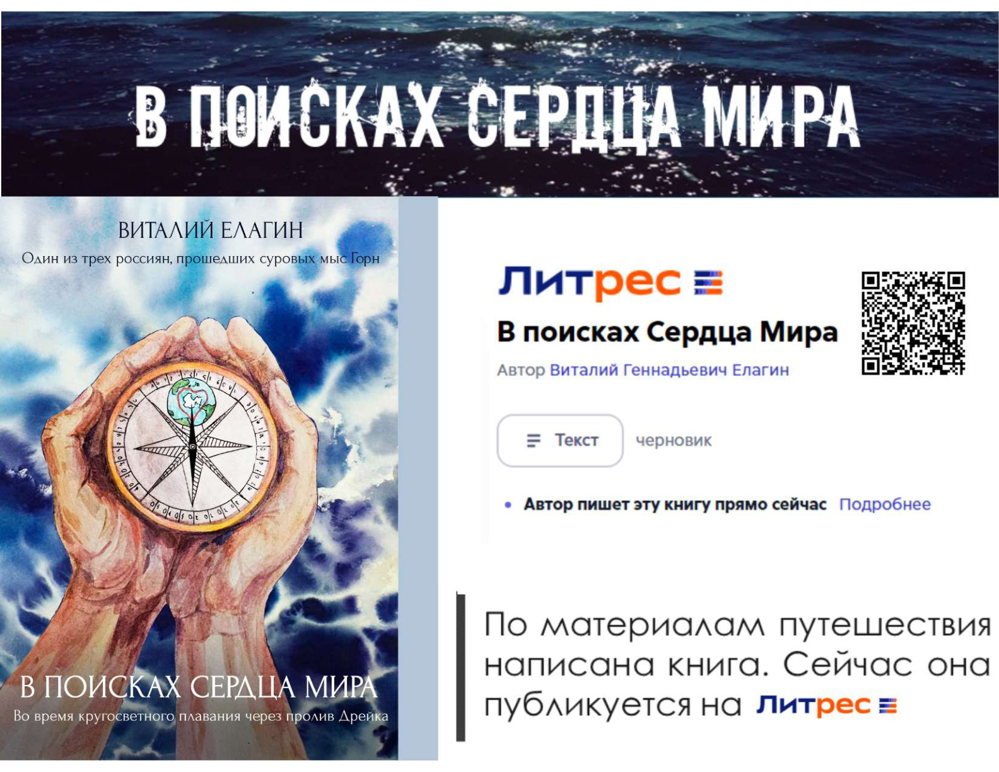

Октябрь — ноябрь
Старт и размеренный океан
Первые месяцы похода прошли спокойно: Атлантика, жизнь на борту, рыба, птицы, экватор и постепенное вхождение в ритм одиночного плавания.
Кругосветное плавание Виталия Елагина на яхте «Дочь Ветра» началось 1 октября 2023 года в Танжере и завершилось 15 июля 2024 года возвращением туда же. Это история маршрута, штормов, поломок, поиска, мыса Горн и возвращения.
1 октября 2023 года на яхте «Дочь Ветра» началось одиночное кругосветное плавание Виталия Елагина. План был жестким и простым: выйти из Марокко в Атлантику, пройти Канары, острова Зеленого Мыса, обогнуть мыс Доброй Надежды, пройти Индийский океан, Австралию, Новую Зеландию, Тихий океан, пролив Дрейка и вернуться в Танжер.
На практике маршрут стал не только географией. Он превратился в проверку лодки, человека, связи, сна, ремонта, выдержки и способности продолжать движение, когда обстоятельства пытаются остановить кругосветку.

От спокойного старта в Атлантике до исчезновения связи в Южном океане, поиска, прохождения мыса Горн, ремонта и завершения кругосветки.
Первые месяцы похода прошли спокойно: Атлантика, жизнь на борту, рыба, птицы, экватор и постепенное вхождение в ритм одиночного плавания.
В Индийском океане были благополучно пройдены первые штормы, но проявились проблемы с обрастанием корпуса. В январе начались первые серьезные технические и психологические испытания кругосветки.

Февраль стал месяцем жестких испытаний: усталость, плохой сон, сломанный крюк, стук степса и волны, которые срывали с яхты все, что было закреплено недостаточно надежно.

В марте пришло сообщение о необходимости ремонта и возможной задержке южнее Чили. Затем связь пропала, начались поиски с воды, воздуха и космоса. Позднее удалось получить координаты через проходящее судно.

После поиска и восстановления связи пришла главная весть: мыс Горн пройден. Это стало ключевой точкой похода и доказательством, что кругосветка продолжается.
После ремонта яхты и пошива нового грота «Дочь Ветра» продолжила путь вдоль Южной Америки, снова пересекла экватор и Атлантику. 15 июля 2024 года кругосветное плавание официально завершилось в Танжере.

Официально кругосветка закончилась.
Старт — 01.10.2023. Финиш — 15.07.2024.
По материалам путешествия написана книга. Сейчас она публикуется на Литрес.

История «Дочери Ветра» продолжается не только в архиве Telegram и видеоматериалах. Она превращается в книгу — в рассказ о маршруте, страхе, одиночестве, технических решениях, поиске и возвращении.
Для Школы Океан эта история важна как практическая основа: не теория о море, а прожитый опыт, из которого рождаются обучение, разговоры, выводы и новые проекты.
Открыть ЛитресКругосветка завершилась, но опыт «Дочери Ветра» остается живой частью Школы Океан Виталия Елагина. Новые материалы, заметки, видео и проекты удобнее всего смотреть в Telegram-канале школы.
Открыть Telegram